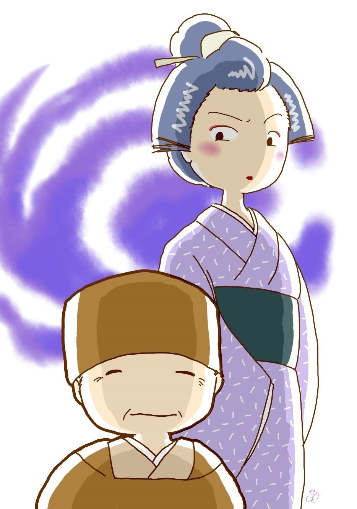

| 庚申横町: 銭形平次捕物全集第42話 (銭形倶楽部) | |
| 野村胡堂 | |
| ZENIGATA CLUB (2018) | |
一
「親分、向うの角を左へ曲りましたぜ」
「よしッ、手前はここで見張れ、俺は向うへ廻って、逆に引返して来る」
平次とガラッ八は、近頃江戸中を荒し廻る怪盗、------世間で『千里の虎 』というのを、小石川金杉水道町の路地に追い込んだのです。
「合点だッ、親分、八五郎が関 を据えりゃ、弁 慶 が夫婦連れで来ても通すこっちゃねえ」
ガラッ八の八五郎は、懐から手拭を出すと、キリキリと撚 を掛けております。
まだ薄寒い二月の真夜中、追う方から言えば、意地が悪く月も星も見えませんが、曇っているだけに、物の隈 が濃くないのは、逃げる者に取っては案外楽でないかもわかりません。
「無駄を言わずに要心しろ、ここへ追い込めば袋の鼠だ。手前か俺が縮 尻 らなきゃア、逃げられる場所じゃねえ」
平次はそう言いながら、引返して逆に、右手の路地を入って行きます。言わば蹄 鉄 形 の長い路地を、一方の口にはガラッ八が頑張り、一方の口からは平次が入って行ったのですから、左右の町家のいずれかへ飛込むより外に道はない筈です。
「あッ」
路地へ入った時、平次は思わず声を出しました。向うから飛んで来た曲者の姿が、チラリと平次の眼に入ったと思うと、蹄鉄形の路地の頂点あたりで、掻 き消すように消えてなくなったのです。
平次はそのまま駆け続けました。
「あッ、親分」
「なんだ、八か」
「曲者の姿がこの辺で見えなくなりましたぜ」
「お前もそう思うか」
「路地へ消えたか大地に潜ったか、とにかく引返さないことだけは確かで」
関所に頑張らずに曲者の後を追ったのは八五郎の出過ぎですが、その代り、曲者の消えた場所を二人の眼で、左右から正確に見定めることの出来たのは怪我の功名でもありました。
「左側だ。------その辺に人間の潜 るような穴はないか」
「穴はねえが、木戸が一つありますよ」
「押して見ろ」
「開きませんよ」
「どれ」
近づいた平次、粗末な三尺の木戸を押して見ましたが、中から桟 がおりていると見えて、力ずくでは開きそうもありません。
「乗越して見ましょう」
ガラッ八は木戸へ這い上ると、思いの外身軽に越して、向う側からガチャガチャやっております。
「どうした、手間がとれるじゃないか」
「輪 鍵 が外れませんよ」
「逃げ道に輪鍵は念入りだね」
漸く押し開けて入った時は、目の及ぶ限り、曲者どころか野良犬の影も見えません。
「違やしませんか、親分」
「確かにここに追い込んだのは、『千里の虎』だ。間違いはねえ。針が落ちたほどの足音を聞き付けて、お前を犬っころ投げにして逃げた曲者じゃないか。その上祥雲寺 門前からここまで、蜘 蛛 手 の細い路地を拾ってあんな具合に飛んで来るのは、『千里の虎』でなきゃア梟 だ」
二人はそんな事を言いながら、薄明りの中に奥まで見通しのきく、袋路地に入って行きました。
袋路地と言ったところで、一方は寺の高い塀、一方は押し潰したような三軒長屋が一と棟、幅一間ばかりの路地の行止りには隣町の大きい家の裏木戸が一つ、こいつは雇人の夜遊びを嫌ってか、内からも出られないように、形ばかりですが錆び付いた中形の海 老 錠 がおりております。
「八、変な路地だねえ、お前ここは始めてかい」
「知ってますよ親分、これは名題の庚 申 横町じゃありませんか」
「はてね」
「小石川の庚申横町て言や知らない者はありゃしません」
「俺は知らないよ。お猿の石碑 でもあるのかい」
「三軒長屋の取っ付きが按摩 の竹の市で、その隣りは女が美しい癖に、無口で不愛嬌で、町内の嫌われ者になっているお妾のお糸、一番奥が空家で------」
「それじゃ、見ざる 、言わざる だけじゃないか」
「突き当りが、俳諧 の宗匠で其月堂 鶯谷 の裏口、俳諧はからっ下手だそうですが、金があるのと、聾 なのでその仲間では有名ですよ」
「成程それが、聞かざる か。三猿揃って庚申横町は洒落 たものだな。誰がそんな名を付けたんだ」
「あっし じゃありません」
「当り前だ、そんな洒落た知恵がありゃ、世間様が岡っ引なんかにして置くものか」
「まるで叱られているようだ、------ところで親分、一軒一軒叩き起して見ましょうか」
ガラッ八はそう言いながら、一番手近にある、按摩の竹の市の表戸を叩きました。が、もうかれこれ丑 刻 、容易のことでは起きそうもありません。
二
一年ほど前から、風の如く去来する怪盗が、江戸中の岡っ引を手 古 摺 らせておりました。狙うのは大抵非道と名を取った金持か、評判のよくない武家屋敷ばかり、盗るものは必ず現 金 と決っておりますが、不思議なことに、一夜のうちに、二里も三里も離れた、山の手と下町を荒したり、偶々 人に追われても、疾風の如く逃げ去って、塵 ほどの手掛りも残さなかったのです。
千里往って千里還る------と言う意味で、あれは『虎』だ、『千里の虎』だと言うようになりました。
闇の中でも物を見るらしいのと、非常な体力を持っているのと、貧乏人を困らせないのとで、何時の間にやら『千里の虎』は、江戸ッ子の英雄になりました。後、鼠小僧や弁天小僧がやんやと言われたように、少し物好きで、少し世紀末的になりかけた当時の人達に、『千里の虎』は一種の人気を持ったのも無理のない事でした。
南北町奉行、与力、同心、岡っ引まで、江戸ッ子の拍手喝 采 を聞く毎に躍 起 となりましたが、『千里の虎』の超人的な腕と脚と、目と耳と、それにもましてよく働く知恵には、どうすることも出来ません。
「千里の虎も大分増長したようだ、そのうちに自分から進んで餌 に付くよ、放って置くが宜い」
去年の秋頃から、銭形平次はそんな事を言って、ともすればこの兇賊に挑戦しようとする、ガラッ八の八五郎を牽制しておりました。
「でも、千里の虎は人気者ですよ、非道な金持から盗って、貧乏人へ恵んでいると言うじゃありませんか」
八五郎も少しばかり『千里の虎』に喝采を送りたい方です。
「飛んでもねえ、百両盗った内から十両恵んで義賊面 が癪 じゃないか。そんな安い運上があるものか。九十両は自分の懐へ入れて、それでやんや と言われりゃ世話はねえ、一体世間の人が面喰い過ぎるよ、馬鹿馬鹿しい」
「成程ね」
「貧 の盗みとでも言うなら、可哀想にもなるが、百両二百両も盗んで、貧乏人に五両や三両恵んで好い心持になってるような野郎を俺は大嫌いさ。盗んだ金を恵まれたって、好い心持のものじゃあるめえ。悪事を働いて人助けをするなんてのは、お釈 迦 様 も御存じのない善根だよ」
銭形の平次がこんなに激しい言葉を使ったのを、ガラッ八は見たことも聴いたこともありません。
「驚いたねえ親分、そんなに腹が立つんですかい」
「人の物でも盗ろうと言う程の量見なら、一度はお処刑 になって、地獄へ真っ逆様に落込む覚悟をするが宜い。運上の積りで善根を施こす泥棒なんか、俺は虫が好かないよ、------そのうちにきっと俺の手で縛ってやるから、見ているが宜い。嘘だと思うなら、構う事はねえ、江戸中へ触れて歩くさ」
日頃、滅多 に腹を立てない平次が、虫の居所が悪かったものか、こんな飛んでもない事を言うのでした。
この噂が、パッと江戸中に拡がった頃から、『千里の虎』は時々平次をからかい始めました。
最初は、平次の家のすぐ前、路地の外の酒屋------枡 田 屋に押込んで有金五十両ばかりを出させ、『ここで待っているから平次を呼んで来な、後学のために千里の虎の姿だけでも拝ませてやろう』と、丁 稚 をツイ近所の平次のところまで使いに出し、平次が店から入って来ると同時に、裏口から抜出して姿を隠してしまいました。
二度目は坂本町の両替屋に押込む日取りを平次に知らせ、一と晩平次に待ち呆けを喰わした上、平次が引揚げるのと入れ違いに押入って、夜が明けてから、百二十両ほどせしめて悠 々 と立ち去ったのです。
三度目は今夜。
平次に警告を出して、戸崎町の質両替渡世伊勢屋に忍び入り、宵のうちに脱け出そうとしたところを、平次に裏を掻かれて、伊勢屋の表裏を厳重に張り込まれ、寺の境内から、大番屋敷、伝通院の境内を逃げ廻った揚 句 、真夜中過ぎまで追いつ追われつ、到頭、金杉水道町の袋路地へ追い込められてしまったのです。
平次が大言壮語したのは、いわば『千里の虎』をおびき寄せる『餌』だったことは言うまでもありません。
三
話は元へ返って、------
ガラッ八が自棄 に叩くと、按摩 の竹の市は漸く起き出して来ました。
「誰だえ、今頃戸を叩くのは、仕事なら明日にして貰いてえが------」
建付けの悪い戸を開けて、薄明りの中へ顔を出したのは、四十前後の大男、汚い寝巻姿、灯も何にもないのは、眼の見えない者の気楽さでしょう。
「お前さんは竹の市だね」
「へエ------」
平次の高飛車な調子に竹の市は少しムッとした様子です。
「仕事を頼みに来たのじゃねえ、------今しがたこの路地へ飛込んだ者があるんだが、気が付かなかったかえ」
「知らないよ」
「何？」
「路地の番人じゃねえ、こう見えても店賃 を払って住んでいるんだ、------もっとも二つ三つ溜めてはいるがネ」
竹の市は啖呵 をきりながらニヤリとしました。この一本調子と茶気で、界隈の旦那方から可愛がられている男だったのです。
「大層な威勢だね」
「当り前だ、夜中過ぎに飛込んで来やがって、ドジも抜け裏もねえものだ」
竹の市は又この洒落 に堪能して、ニヤリとなりました。
「成程、こいつは俺が悪かった、勘弁してくんねえ。お上の御用だ」
平次は柔 かに言って、薄明りの中に、竹の市の様子を見直しております。
「ポンポン言うぜ、少しは相手を見るが宜い、神田の銭形親分だ」
ガラッ八はたまり兼ねて横合いから口を出しました。
「えッ、------銭形の親分さんで、それは何とも相済みません、目の不自由な悲しさで、飛んだことを申上げました」
「まア、宜い。八も余計な事を言うな」
「へエ------」
今度は八五郎の方が凹んでしまいます。
「ところで、この路地へ大者を追い込んだが、暗くて見当が付かねえ。提灯があったら貸して貰いたいが」
「へエ」
竹の市は家の中をモゾモゾやっておりましたが、やがて、小田原提灯一つと、鼠の喰い欠いた蠟 燭 が一と塊り、それに、火打道具を添えて持って来ました。
「有難う、眼の不自由な人にしちゃ良いたしなみだね、------お前さん配 偶 は？」
平次は火打鎌 を鳴らしながら訊きます。
「そんなものはありゃしません。貧乏な按摩のところへ誰が来てくれるものですか」
「そうじゃあるまい、お前さん、飛んだ金を残していると言うじゃないか」
「世間じゃそんな事も言うそうですが、飛んでもない話で、金がありゃ、人様の足腰なんか揉んでいるものですか、盲目 相応の出世でも致しますよ」
平次の誘いに引っ掛るともなく、謙遜するうちにも、万更溜めていないでもない口 吻 です。
「三度の世話は」
「町内の糊 売 婆 さんが来て拵 えてくれますよ」
平次は漸く提灯に灯りを入れて、竹の市の世帯へ一と通り眼を通しました。表構えよりは小綺麗で、世帯道具も一と通り揃っておりますが、家の中はひどく乱雑で足の踏み場もないといった感じです。
「お前さんは幾つから眼が悪くなったんだえ」
と平次。
「中年からの盲目で、感が悪くて困ります」
「内 障 眼 のようだね」
「へエ」
平次は提灯の灯りを竹の市の眼の前へ持って行って、左右へ振って見ましたが、瞳は凝然として微動もしません。
四
それから囲 い者のお糸の家へ。
ここは叩くまでもなく開けてくれました。
「ちょっと聞きてえが、先刻この路地へ追い込んだ者があるが、気が付かなかったかえ」
「聞きましたよ、------駆け込んで来て、突き当りの其月堂さんの木戸をこじ開けようとしていた様子でしたが、内外から締 がしてあるもんですから、寺の塀へ飛付いて、境内へ逃げ込んだようです」
無口で無愛嬌------と言われるお糸が、思いの外親切に教えてくれます。二十七八の美しい年増、丑 刻 過ぎというのに、帯まで締めて、鬢 のほつれも見せないのは、さすがに良いたしなみ です。
行燈の後ろから恐る恐る顔を出したのは下女のお喜代、見事な恰幅に、寝巻を引っかけて顫えております。
「八、行って見よう」
平次は八五郎を促して、もう一度路地の奥へ行って見ました。
「親分、この塀が人間業で越せますか」
崖の上に繞 らした黒板塀を見上げてガラッ八は舌を振 いました。高さは六尺そこそこですが、崖の高さを併せると八尺余りで、その上、足場の良いところには、用心のために、忍び返しが打ってあるのです。
「フーム」
平次は唸 りました。
「その忍び返しは外せますよ」
「えッ」
振り返ると後ろへ、妾のお糸が立っているではありませんか。
「町内の子供達がよく乗り越して遊んでいますが、その木の根の上に登ると、頭の上の忍び返しが三尺ばかり外れるんです。塀の中には、古 石 塔 で足場が拵らえてあるそうですよ」
「成程、------そんな事もありそうだ。八、登ってみな」
「へエ------」
八五郎は木の根に登って、忍び返しに手を掛けると、成程そのまま外れて、楽々と乗越せるように出来ているのです。
「八、提灯をやろうか」
平次の出した提灯、それを受取って塀の向う側を照していた八五郎は、
「親分、古石塔で段々が拵えてありますぜ。おや？」
頓狂 な声を出します。
「何だ、八」
「手拭が落ちていますよ」
「拾って来い」
「へエ------」
八五郎は寺の境内へ飛降りましたが、暫らくは帰って来ません。
「どうした、八。手拭を買いに行ったんじゃあるまいな」
「向うへ行って見ましょうか、------寺の門まで見通しですが」
塀の向う側から八五郎が言います。
「無駄だ、引返す方が宜いよ。寺の外は往来だ、曲者がその辺でマゴマゴしているものか」
「へエ------」
八五郎が引返して来るまで、平次の側には、お糸が心配そうに立っておりました。
「銭形の親分さん、見苦しいところですが、一服召上っていらっしゃいまし」
「有難う、ちょっと休まして貰おうか。ところで、私を平次とは、どうして気が付きなすった」
「お隣で、子分衆が大きな声で仰しゃったじゃありませんか」
「成程、そいつは大笑いだ。種を聞けば、天 眼 通 でも何でもなかった」
平次もツイ蟠 りもなく笑ってしまいます。
「親分さん、この路地へ何が逃げ込んだのでしょう」
お糸は無気味そうにお喜代を顧みました。
「お前さんも噂を聞いているだろう、『千里の虎』を追い込んだのさ」
「えッ」
「だが、心配することはないよ、『千里の虎』は非道な金持か、評判の悪い武家屋敷でなきゃア荒さないから」
「でも、女二人で、万一の事があったらどうしましょう」
お喜代はさすがに怯 えきっております。
「大丈夫だよ、------それだけの恰幅なら『千里の虎』位は組伏せられるよ、------お前さんは幾つだえ、何？ 十八？ 孤児 になって、御新造の厄介になっている？ そうかい」
下女のお喜代の逞 ましい身体を、平次はつくづく眺めております。
「親分さん、こんな物騒な晩に、女二人ではとても我慢がなりません。お願いですが、夜明けまで在 らしって下さいませんか」
お糸は湯を沸かさせたり、座布団を持出したり、下女と並べて敷いた次の間の床を畳ませたり、一生懸命引止めております。
「夜明けまではあと一刻もあるまい。入って一と休みしようか、八」
平次は日頃のやり口に似気なく、上がり込んで煙草入れなどを取出します。
「親分」
驚いたのはガラッ八でした。囲 い者などの家へ夜中御 輿 を据える親分ではなかった筈です。
「なんて面をするんだ、気に入らなきゃア隣の空家へでも行って見な、それとも、竹の市に腰でも揉ませるか」
平次は取り合う色もありません。
五
馬鹿野郎、一と晩俺の側にいた癖に、到頭捉めえ兼ねたじゃないか、名御用聞もねえものだ、この後は大きな口を利かない方が無事だぜ、あばよ。
千里の虎より
こんな手紙が翌る日平次の家へ投込まれました。恐ろしい悪筆ですが、相当の文筆を使っているところを見ると、下書きして人に書き直させたか、でなければ、左手で書いたものでしょう。
「親分、癪にさわるじゃありませんか、こんな悪 戯 なんかしやがって」
「怒るな、八、こう餌 に付いて来れば占めたものだ」
平次はその足ですぐ、下っ引富坂の勘助を訪ねました。
「おや、銭形の親分」
荒物屋を表商売にしている勘助は、平次とガラッ八の顔を見るとすぐ裏木戸を開けて、狭っ苦しい代り人目に付かないところへ案内してくれます。
「勘助、外じゃねえが、あの庚申横町の連中をよく知っているだろうね」
「三度のお菜 まで知っていますよ、親分」
「竹の市は少し溜めているって言うが本当かい」
「金のあるような顔はしませんが、------大分持っているようです」
「感の悪い盲目だが」
「悪いの悪くねえの、瘤 ばかり拵えていますよ、よくあれで牛にも馬にも踏み潰 されないことで」
「按摩はうまいのか」
「からっ下手ですがね、内々武家方や町人へ金を廻して利分を取っているという噂もありますよ」
勘助の説明で、竹の市の全貌が次第に判然して来ます。
「お妾のお糸の旦那は誰だえ」
「それが大変なんで」
「大変な旦那と言うと？」
「宗匠ですよ」
「------」
「路地の突き当りの其月堂 鶯谷 宗匠 ですよ。かなりの年でしょうが、達者なもんで」
勘助は、ニヤリニヤリしております。
「それじゃ路地へすぐ出られる裏木戸へ、内外から錠をおろしたのはどう言うわけだ」
「奉公人が夜遊びに出るからと言うのは口実で、実は宗匠の内儀 が、一方ならぬ嫉 妬 で、あんなところから出たのを見付かったら大変なことになります」
「成程」
「だから、運座へ行くと言うことにして、三日に一度は表通りから大廻りにあの横町に辿 り着くんで、------町内で知らない者はありません」
「面白いな」
「面白いのはそんな事じゃありません。宗匠が来ると、間もなく若い男がお勝手口からコソコソと逃げ出しますぜ」
「へエ------」
「宗匠が帰る頃、どこからともなく若い男が帰って来るなどは、十七文字にはない知恵で」
勘助はすっかり悦に入って、両手を揉み合せております。
「その若い男の素性が判るかい」
「そればかりは判りませんよ、何時でも手拭で頬 冠 りをして------誰かに後を跟けられたと覚ると、その逃げ足の早いと言うことは------」
「それから、あの一番奥の家は、何時から空いているんだ」
「もうズーッと一年も空いていますよ。もっとも、誰か借りて一年分の店 賃 を前払いにしたまま、上方へ行ってしまったと言う話もありますがね」
「持主は？」
「角の米屋で」
「有難う、それだけ聞けば沢山だ」
平次とガラッ八はそれっきり外へ出ました。
六
「親分、あっし はあの手拭が気になってならねえ、寺の方を捜 して見ちゃどうです」
「俺もそれを考えていたよ、行って見ようか」
二人はグルリと一と廻り、寺の表から入って行きました。
かなりの伽藍 ですが、住職は七十以上の老人、それに小僧はまだ十二三、何を訊いても一向埒 があきません。
裏へ廻って墓場から、石塔を積んだ石場のあたり、忍び返しまで調べましたが、何の変ったこともなく、唯曲者がここから脱出したところで、寺の門を通って往来へ出てしまえば、どうすることも出来ない事だけが判然と解った位のものです。
「親分、ここにも手掛りはありませんね」
「がっかりするなよ、八、俺には手掛りがあり過ぎるほどなんだ」
「へエ------」
「逃げ込んだ木戸へ、手探りで輪鍵を掛けたり、忍び返しの外れた場所を知っていたり、------そんな事をする人間はどこにいると思う」
「成程、この寺の近所というわけですね」
「その通りだよ、早速、お隣りの其月堂宗匠に逢って見ようじゃないか」
二人は寺の隣に、しもたや 風の心憎き住居を訪ねました。
耳が遠いから、俗用は召使の者に------と言うのを、神田の銭形平次と名乗って、押して逢って貰いました。
通されたのは奥の六畳、型の如く明 窓 浄几 、側には俳書らしいのを入れた本箱、前の爐 には釜がチンチンたぎって、俳画の細物の一軸が後ろにあると言った道具立てで、主人の鶯 谷 は茶色の頭巾を深々と冠り、被 布 を羽織ったまま、口をもぐもぐさせて二人を迎えます。
「私は神田の平次ですが、------ちょいと伺いたいことがあって上りました」
挨拶がすむと、平次は早速膝を乗出しました。
「左様、左様、結構なお天気で、------親分もやはり、その道のたしなみがおありかな」
五音 の外れた声、あまりの事に二人は顔を見合せるばかりです。
「そうじゃありませんよ、宗匠、裏木戸の錠のことですが」
「よく聞えますよ、裏木戸がどうかしましたか」
大きい声だけは辛くも聞える様子ですが、聾 の癖で、半分聞えたのを、すっかり呑込んでしまうので話の運びのむずかしさと言うものはありません。
それでもどうやらこうやら、裏木戸の錠は二年前におろしたまま、一人も開けた者のないと言うことだけは確かめました。
「それから、宗匠、あのお糸と言う------」
女の話を訊こうとすると、そこへ大 丸 髷 四十前後の、恐ろしく若造りな女が出て来ました。
「いらっしゃいまし、私は其月堂の家内で------」
と、お屋敷勤めの昔を匂わせようと言う小笠原流の挨拶が始まったのです。
こんなのに出られては、平次とガラッ八も引揚げるより外に術 がなくなりました。
「いずれ又参ります。今日は急ぎますから」
ほうほう の体で立上ります。
「あれ、宗匠、頭巾 のままで御挨拶は失礼じゃ御座いませんか」
内儀が大きい声で注意すると、鶯谷宗匠はあわてて茶色の頭巾を脱ぎました。様子の年寄り染みる割合には、胡麻塩の毛が房々と生えて、鬢 も髷も、思いの外見事です。

挨拶がすむと宗匠は、くるりと背を向けて、机の上の俳書に目を注ぎ姶めました。送っても出ようとはしない傍若無人さが、世捨人らしい気楽なところでしょう。
内儀に送られて縁側に出た平次は、何としたことか、よく磨き抜いた板敷に滑って、ステンコロリと転びました。
「あッ」
その上障子を一枚見事に押倒しましたが、其月堂鶯谷宗匠は振り向いても見ません。
「これは飛んだ粗相 をいたしました」
「どういたしまして、お怪我はありませんか」
「粗相は生れ付きで、こんな事は馴れておりますから」
平次の恐縮振りと言うものはありません。逃げ出すように、八五郎を引立てて飛出してしまいました。
七
平次はその足ですぐ麹町三丁目の御典医、梅木淳庵 先生のところへ飛んで行きました。
その帰り路。
「八、お前は、盲 の真似と、聾 の真似と、どっちが楽に出来ると思う」
平次は妙なことを聞きます。
「そりゃ、判りきってるじゃありませんか、親分」
「それが一向判りきらないんだ」
「盲目の真似は眼をつぶっているだけでも楽じゃないでしょう。聾なら聞えない振りをしていさえすれば宜い------」
「そうかなア」
「そうですとも親分」
「後 で、いきなり大きな音を立てられて、平気でいる------なんてことは出来るかな」
「------」
ガラッ八も黙ってしまいました。平次は其月堂鶯谷のことを言ってるのでしょう。
家へ帰って見ると、待ち構えたように、又悪筆の手紙が来ております。
平次、もう十手捕縄をお上へ返せ、俺には歯も立つまい。今日もツイ側にいたじゃないか、ところで、お前の馬鹿さ加減を思い知らせるように、今晩は富坂の角の米屋に押入る、時刻まで教えてやろう、宵の酉刻 から戌刻 迄の間だ。 千里の虎より
「畜生ッ、今晩こそ思い知らせてやるぞ」
平次がこんなに腹を立てたのは、ガラッ八もツイ見たことがありません。
その晩は全く見物 でした。
今まで押入られる先を警戒して、何時でも出し抜かれた平次は、その日は宵から庚 申 横町の外、駄菓子屋の店を借りて張り込むことにしたのです。
「親分、もう酉刻 半ですよ」
「シッ」
二人は半分閉した店の障子の間から、庚申横町の口を厳重 に見張っております。
「最初に出て来た人間を捕まえりゃ宜いでしょう」
「そうだよ」
恐ろしい緊張------、二人は思わず固唾 をのみました。
四方がすっかり暗くなった頃。
「------」
眼の早い八五郎は、平次の肘 をちょいと突きます。庚申横町の木戸を内から開けて、闇の中へスッと出た者があるのです。
「御用ッ」
飛付いた平次。
「何をしゃアがるッ」
曲者は恐ろしい剛力で突飛ばしました。
「神妙にせい」
後 から八五郎がガバと組付きました。
が、この捕物は思いの外早く片付きました。キリキリと縛り上げて、街の灯のさすところまで連れて来ると、それは予期した通り、竹の市の怪奇な坊主頭です。
「銭形の親分、悪い冗談だ、私をどうなさる積りで」
「黙れッ」
平次は無愛想にきめ付けて、番所まで引いて来ました。
「平次、『千里の虎』を挙げたそうだが、大層な手柄だ」
吟味与力笹野新三郎は、我が事のように喜んで待っていたのです。
「有難う御座います。思いの外手軽に捕まりました」
「旦那、私は『千里の虎』なんかじゃありません、唯の按摩の竹の市で」
竹の市はガラッ八に突飛ばされると、そこにある物に躓 いて土間に坐り込みます。
「千里の虎でなきゃア、何だって盲目の真似をした」
「えッ」
ガラッ八も驚きましたが、それよりも驚いたのは竹の市でした。
「偽盲目とどうして判った。平次、それを話してやれ、本人も何時までも盲目の真似をするのが、馬鹿馬鹿しくなるだろう」
笹野新三郎はうまい事に気がつきます。
「盲目でない証拠は沢山ありますが、先ず家の中をあんなに取散らばしているのが変です。盲目というものは、居廻りの物をキチンと片付けて、何がどこにあるか、よく解るようにして置くものです」
「成程」
「それから、いくら感が悪いと言っても盲目です、目明きのお糸が聞き付けた曲者の足音を聞かなかった筈はありません」
「------」
「この通り目を開いたっきりで、本人は内 障 眼 だと言っていますが、何時までも瞳が動きません、動けば凝っと明後日の方を見詰めています。三番町の梅木先生に行って聴くと、内障眼で盲目になった人の瞳は、物の見定めと言うものがないから、灯にも物の象 にもかまわずに、フラリフラリと動くものだそうです」
「フーム」
「それから、先刻、御用ッと言っただけで、私を平次と知ったのも変じゃ御座いませんか」
平次は動きの取れない証拠を上へ上へと積んで行きます。
「嘘だ嘘だ。------盲目は如何にも偽だが、これは世過ぎのためだ。目明きの按摩じゃ流 行 らねえから、少し眼の疎 いのを思いつきに、盲目の真似をしたまでの事だ。人の物なんか盗るような大それた人間じゃねえ、千里の虎なんて飛んでもねえ話だ」
「黙れ」
「いや、黙らねえ。銭形の親分ともあろうものが、そんな目違いをして済むと思うか」
竹の市は気違いじみた声を出して猛り立ちます。
「それじゃ、忍び返しの向う側、寺の境内へ手拭を投げ込んだのは誰だ」
「知らねえ、知るもんか」
「あれは曲者が逃げたと見せるために、お前が投げ込んだ手拭だ」
「知らねえ知らねえ」
「あの手拭は酒屋の配り物で町内に百本もあるが、あれにだけは目印があったんだ」
「------」
「糊 売り婆さんが、自分の家へ持って来て洗濯する時、同じ模様の手拭と間違えないように、お前の分へ墨で印を付けたんだ」
「嘘だ」
「いや嘘じゃねえ」
「俺の手拭を盗んで、誰かお寺の方へ投り込んだんだ」
「そんな事があるものか、------お前が忍び返しを外して、寺へ逃げ込んだ------と思わせて何の役に立つ、現にお前は自分の家にいたじゃないか」
平次の明察は、畳みかけて竹の市の口を塞 ぎます。
その時丁度、庚申横町の竹の市の家を捜させた、下っ引の勘助とガラッ八が帰って来ました。
「親分、縁の下の植木鉢の中と、押入の天井に、小判で百五十両隠してありましたよ」
「あッ」
ザラリと畳の上へ並べた小判。
「これでも唯の按摩か、------千里の虎------ともあろうものが未練だぞ、白状せい」
平次は竹の市の驚き呆れる肩に手を掛けました。
八
それから四半刻ばかりも、竹の市を責めてみましたが、何としても、『千里の虎』だとは言いません。
が、とにかく、近頃の大物で、番所へ止め置くわけにも行かず、平次、ガラッ八、勘助の三人で、数 寄 屋 橋まで送ろうと言う時、
「た、大変ッ」
町の若い者が二三人転がるように飛込んで来ました。
「どうした、騒々しい」
「角の米屋へ押 込 が入りました」
「えッ」
「俺は『千里の虎』だ、と威張り返って、有金十五両盗った上、手向いする手代を斬って、どこともなく逃げてしまいました」
「あッ」
平次もガラッ八も、笹野新三郎も開いた口が塞がりません。
「確かに『千里の虎』と言ったか」
平次はわずかに平静を取戻します。
「言いましたよ、------銭形の親分に約束したが時刻も丁度戌 刻 だ、------って」
若者の一人は米屋の丁稚 でしょう。
「平次」
暫らく経って笹野新三郎は言い出しました。
「旦那、これは私の一代の失策 かも知れません、------少し考えさせて下さい」
平次は打ち萎 れて、番所の隅に腕を拱 きます。
「見やがれ、真物の『千里の虎』が出て来たろう。サア、俺をどうしてくれるんだ、------無闇に人を縛りゃアがって、銭形の平次もねえものだ、畜生ッ」
竹の市は、事情を察して、口汚く罵 り始めたのです。
「面目次第もありません、これは全く私の間違いで御座いました。竹の市の縄は解いてやって構いませんか」
「勝手にするが宜かろう」
笹野新三郎の許 を受けると、平次は竹の市の後ろへ廻りました。縄を解いてやる積りだったのです。
「嫌だ、今更縄なんか解いて貰いたくねえ。このままお白 洲 へ突き出してくれ。銭形平次を日本一の阿呆にしなきゃア、俺の腹の虫が納まらねえ」
竹の市は身体を揉んで解かせまいとします。
「まア勘弁しろ、手前も盲目の真似なんかしたのが悪いんだ------平次のした事が気に入らなきゃア、坊主になって謝まる」
「本当か」
「本当とも、坊主------」
フト平次は手を休めました。
「どうした、平次」
笹野新三郎も何となく気が気じゃありません。
「あっ、解ったッ------今度は逃さねえぞ」
言い残して平次は、疾風の如く駆け出したのです。続いて忠実なガラッ八。
庚申横町まで来ると、平次はピタリと立止りました。
「八」
「へエ------」
「命がけだよ」
「------」
八五郎のガラッ八は、黙って点首 きました。そこからお妾のお糸の家まではほんの五六間。
「今晩は」
「どなた？」
下女のお喜代の開けた格子の中へ、平次は一文字に駆け込んだのです。
「千里の虎、御用ッ」
「何をッ」
立上ったのは、大黒頭巾を耳まで冠った宗匠の鶯 谷 と、妾のお糸でした。
「何をしやがる」
後ろから平次へ飛付いたのは、下女のお喜代、非凡な力に、平次も思わずたじろぎ ます。
「これでも食らえッ」
鶯谷はどこから出したか、匕首 を閃めかして真一文字に平次の胸倉へ、それは実に危機一髪という際どさでした。
「親分、危ないッ」
飛込んだガラッ八、絡み付くお喜代に手が伸びると、平次はそれに引かれるように、僅かに身をかわして辛くも匕首の尖 を除 けます。
「逃げて下さい、早く」
お糸は気違いじみた声を振り絞りながら、皿、小鉢、鉄瓶、火 箸 、見境いもなく投げ出しました。
「八、その女を押えろ」
「親分」
ガラッ八がお喜代一人と揉み合う間に、平次は飛込んでお糸を押え、猛然として切りかかる鶯谷の匕首を除け除け、右手を懐に入れて、取り出したのは得意の投げ銭です。
「えーい」
一つは額 へ。一つは匕首を持つ手へ、一つは鼻柱へ------。
思わぬ武器にひるむ鶯谷、裏口へ逃げ路を捜すところを、手練の十手が、ピシリとその肩を叩きます。
「神妙にせい」
× ×
兇賊『千里の虎』は、聾 の俳諧師 其月堂 鶯 谷 だったのです。年は精々四十七八、あんな老人になりすました非凡の変装に、新三郎も平次も舌を捲くばかりでした。
「親分、あっし には解らない事ばかりだ。例 の通り、絵解きをしておくんなさい」
翌る日、ガラッ八の望みで、平次はこう話して聴かせました。
「最初から俺は宗匠を疑ったが、梅木先生から、聾 の真似は容易に出来るものでないと聞いて迷ったのさ。鶯谷は背 後 で俺が転んでも、障子が倒れても身 動 ぎもしなかったろう。偽聾にはあれは出来ないことだ」
「すると------」
「一方、竹の市はすぐ偽盲目と判った。が、縛った後で、千里の虎は米屋へ押込んでいる、俺はあの話を聞いた時ほど驚いたことはない、本当に坊主にでもなろうかしら------と、フト頭へ手が行った、その時、其月堂の頭 巾 のことに気がついたんだ。年寄りだし、まだ薄寒いし、頭巾を冠るに不思議はないが、耳の上までスポリと引下げていたのは可怪しい」
「------」
「俺が帰ろうとする時、気が付いたように取ったが、あれは疑われたくないためだ」
「フーム」
「あの時俺は、鶯谷の耳の穴に、何か鼠色の光るものが、入っているのを見たような気がするんだ。耳の聞える者が、聾のふりをするには、耳の穴を塞ぐより外に術 はない、あれは蠟 で、耳の穴なり に拵えて詰めてあったんだ」
「なーる」
「蠟の詰めで耳を塞いだ時は鶯谷宗匠、それを取った時は『千里の虎』さ」
「お糸の家へ宗匠が来ると、若い男が裏口から逃出したと言うのは何でしょう」
ガラッ八は最後の問いを持出しました。
「それが鶯谷さ、一人二た役だよ。自分の家からは決して、『千里の虎』の身 扮 で出ないのがあの男の悪賢い所だ。鶯谷宗匠で大廻りに廻ってお糸の家へ来る、すぐ引抜いて『千里の虎』の若い姿になって荒仕事に出かける、帰って来ると、元の鶯谷になって、又大廻りに自分の家へ帰って行ったんだ」
「へエ------驚いたね」
「裏木戸へ内外から錠 をおろしたり、お糸の隣の家を一年借りたり、何しろ細工は細かいよ。その上、あの宗匠の内儀と見せたのは妹で、妾 のお糸は本当の女房、お喜代も悪者の一味だったんだ」
「最初の晩、『千里の虎』はやはりあの塀の忍び返しを外して逃げたんで------」
「いや、そんな暇はなかった筈だ。お糸の家へ隠れていて、俺達がお糸に忍び返しの細工を教わったり、お糸が予 て用意に投り込んで置いた、手拭を拾ったりしているうちに、路地の木戸から逃げたんだ。あの時は甘々とお糸にやられたよ、------長い間十手捕縄を預かって、今度のような見当違いをしたのは始めてだ、岡っ引は自 惚 れちゃいけないな」
平次はしみじみとそう言うのでした。
（編注）
作品中には、身体の障害や人権にかかわる、差別的な語句や表現が見られますが、本書が成立した当時の時代背景等が現代とは異なる古典的な文学作品でもあり、著者が故人でもありますので、底本のままとしました。ご理解、ご諒承のほどをお願い申し上げます。
著者---野村胡堂
挿絵---萩 柚月 © 2017
初出---「オール讀物」昭和十年七月号 文藝春秋社
底本---「錢形平次捕物全集」第二巻 河出書房 昭和三十一年五月三十一日初版
編集・発行 銭形倶楽部